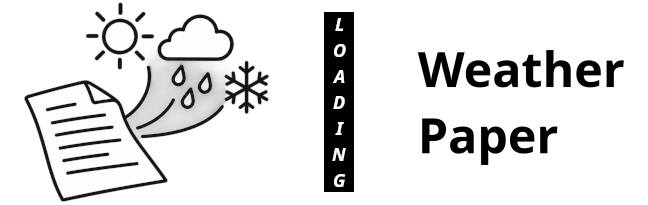
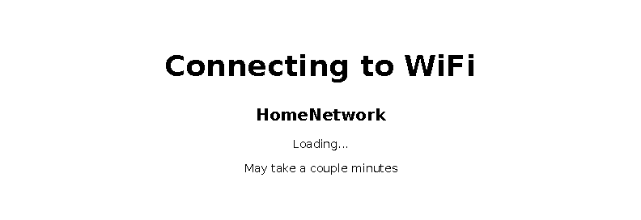
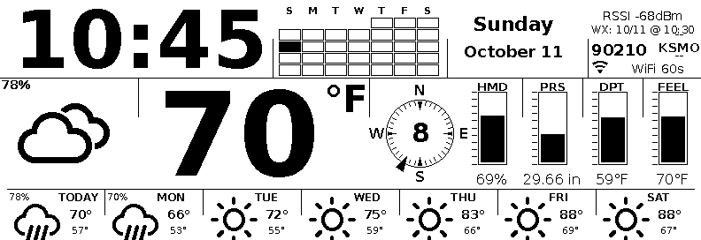
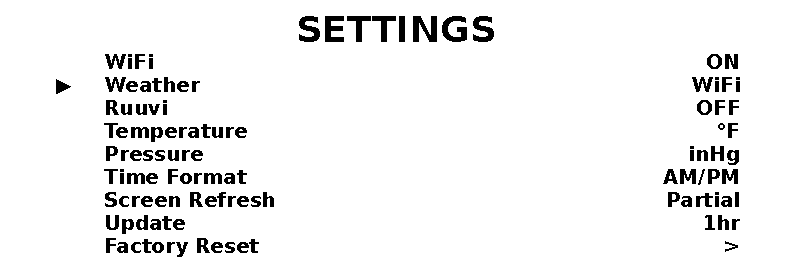

A battery-powered weather display. Real National Weather Service conditions and a 7-day forecast on a 5.79″ e-paper screen.
Weather Paper is a small e-paper display that shows your local weather. It wakes once a minute to update the clock, and once an hour to pull fresh conditions and the forecast over Wi-Fi — then goes back to sleep, running for months on a single charge.
Temperature, condition, feels-like, humidity, barometric pressure and dew point — from the National Weather Service, matched to your ZIP code.
Speed (MPH) and direction on a compass dial, so you can see at a glance which way the weather is coming from.
Highs, lows and icons for today and the next six days, with precipitation chance when it matters.
The low-power e-paper screen only draws when it refreshes. A single charge lasts roughly 2½ months.
One time, about a minute. No toolchain, no terminal — it all happens in the browser.
The display sets itself up over a temporary Wi-Fi network on your phone. About 15 seconds.
The setup screen: join the shown network, scan the QR, and enter your Wi-Fi + ZIP.

After saving, it reports progress. If the password is wrong it returns you to setup to try again.
The top strip is the clock, date and a mini calendar. The middle is the current weather and the wind dial. The bottom is the 7-day forecast.

The main screen: time, date, calendar, current temperature and conditions, humidity / pressure / dew point / feels-like bars, the wind dial, and the 7-day forecast.
| Element | Area | What it shows |
|---|---|---|
| Clock | Top | Current time — 24-hour, AM/PM, or UTC. |
| Date | Top | Full weekday name, month, and day. |
| Calendar | Top | Mini month view; today’s date is filled in. |
| Status | Top right | Wi-Fi signal (RSSI), ZIP code, weather station, and last-update time. |
| Condition icon | Middle | Current weather — sun, cloud, rain, snow, etc. |
| Precip. chance | Middle | Today’s percent chance of precipitation. |
| Temperature | Middle | Current temperature in °F or °C. |
| Wind dial | Middle | Wind speed (MPH) and direction. |
| HMD | Middle | Relative humidity. |
| PRS | Middle | Barometric pressure (inHg or hPa). |
| DPT | Middle | Dew point. |
| FEEL | Middle | Feels-like temperature (wind chill, heat index, or ambient). |
| 7-day forecast | Bottom | Today + 6 days: condition icon, high, low, and precipitation chance. |
Side view: MENU and EXIT are push buttons; the wheel rolls up/down and pushes in.
| Control | Does |
|---|---|
| MENU (top button) | Open settings |
| EXIT (bottom button) | Go back / close settings |
| Wheel up / down | Move through settings |
| Push the wheel in | Refresh weather now (shows a loading screen while it fetches) |
Push the wheel in to force a refresh — it shows a loading screen until the new conditions arrive.

Settings are reached with the MENU button and changed with the wheel (up/down to move, push in to toggle).
| Setting | Options | What it does |
|---|---|---|
| WiFi | ON / OFF | Turns the Wi-Fi connection on or off. It’s used for the clock (time sync) and weather. Turn it off to save battery if you only use a Ruuvi sensor. |
| Weather | WiFi / Ruuvi | Picks the data source: WiFi = National Weather Service (current conditions + 7-day forecast); Ruuvi = a nearby RuuviTag BLE sensor (temp / humidity / pressure). |
| Ruuvi | ON / OFF | Enables the RuuviTag BLE sensor. Leave OFF if you don’t have one. |
| Temperature | °F / °C | Display unit for temperature, dew point, and feels-like. |
| Pressure | inHg / hPa | Display unit for barometric pressure. |
| Time Format | 24 Hour / AM-PM / UTC | How the clock reads. UTC shows Coordinated Universal Time. |
| Screen Refresh | Full / Partial | Full redraws the whole screen each refresh (crisper); Partial refreshes faster and uses less power. |
| Update | 1hr / 30min | How often it fetches fresh weather. 1hr gives the longest battery; 30min keeps the data fresher. |
| Factory Reset | — | Erases Wi-Fi, ZIP, and every setting, then reboots into setup. |